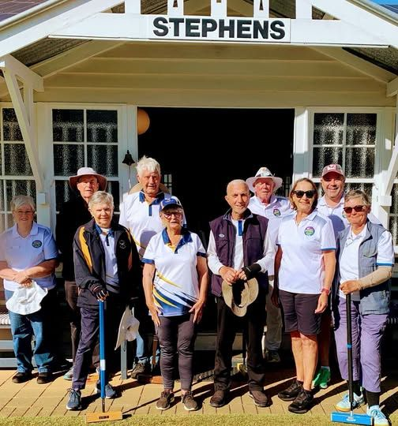
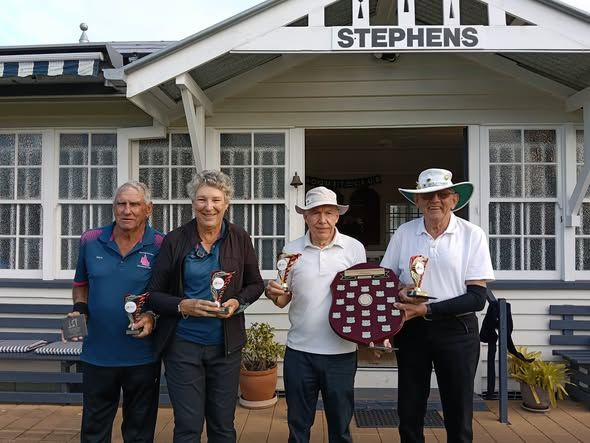

Film still: Croquet Australia, not taken at Stephens
Our stories
What the club has been up to: games, results, visitors and birthdays. Each story opens on HOOPLA, the Croquet Queensland news site.
Read the storiesFrom HOOPLA





Coming up
From the Croquet Queensland calendar on MyCroquet.
7–8 Nov AC CAQ Division 3 & 4 championships
A Croquet Queensland event at Stephens Croquet Club. Association Croquet. Enter online
26–30 Mar Stephens Easter AC & GC
A club event at Stephens. Association and Golf Croquet. Ask the club